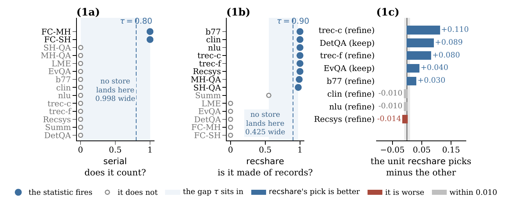
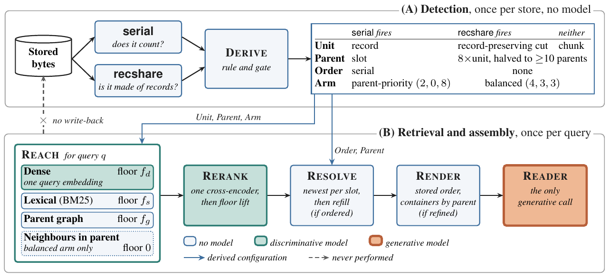

MUSTER
Detect before you construct. MUSTER reads the structure already present in a text store and configures retrieval and context assembly to fit it.
57.5 on MemoryAgentBench at its own GPT-4o-mini reader, first among the retrieval and memory systems the benchmark reports · 93.46 on LoCoMo · 64.3 on BEAM-10M · a 10M-token memory built in 77 seconds with 0 LLM calls, where Mem0 makes 10,429 calls over 13 hours.
On this page: Results Run it Cost How it works Detailed results Reproduce FAQ
BEAM-10M score against the build time for one 10M-token conversation
Scores on one instrument, higher is better; LLM calls, fewer is better (Infini Memory: its paper's numbers)
MemoryAgentBench, overallGPT-4o-mini reader, the benchmark's own protocol
- MUSTER57.5
- True Memory43.6
- Honcho35.0
- Hindsight31.4
- Mem026.7
- EverMemOS23.1
MemoryAgentBench, Infini Memory's scoringGPT-5-mini reader, GPT-5 judge; Infini Memory as its paper reports
- MUSTER67.4
- Infini Memory-Aas its paper reports, 64.7
MUSTER's own GPT-5-mini answers, rescored with Infini Memory's GPT-5 prompt.
LoCoMo, 1,540 questionsGPT-4.1-mini reader, GPT-4o-mini judge; Mem0's prompt EverMemOS's prompt
- MUSTERMem0's prompt 86.04EverMemOS's prompt 93.46
- EverMemOSMem0's prompt 83.87EverMemOS's prompt 93.05
- True MemoryMem0's prompt 81.93EverMemOS's prompt 90.58
- Mem0Mem0's prompt 80.50EverMemOS's prompt 89.44
- HindsightMem0's prompt 73.48EverMemOS's prompt 85.35
- HonchoMem0's prompt 67.34EverMemOS's prompt 77.62
LoCoMo-Refined, 1,382 questionsofficial judge, AML answer template, memory systems write with GPT-OSS-120B; GPT-4o-mini GLM-5.3-Flash reader
- MUSTERGPT-4o-mini reader 77.57GLM-5.3-Flash reader 88.78
- EverMemOSGPT-4o-mini reader 75.33GLM-5.3-Flash reader 80.32
- Mem0GPT-4o-mini reader 73.73GLM-5.3-Flash reader 80.54
- True MemoryGPT-4o-mini reader 71.56GLM-5.3-Flash reader 80.10
- HindsightGPT-4o-mini reader 63.68GLM-5.3-Flash reader 70.91
LoCoMo-Refined, LLM callsto build and search memory over its ten conversations; † one HyDE query per question
- MUSTER0
- Hindsight543
- True Memory1,382†
- Mem05,882
- EverMemOS9,034
BEAM, 100K to 10M tokensGLM-5.3-Flash reader, BEAM's judge; 19.5K context (Hindsight 8.4K, Honcho 20.7K)
Research release · Apache-2.0Library and experiment harness included (STATUS.md)
Results on one instrument
MUSTER is first among retrieval and memory systems on MemoryAgentBench (57.5 against True Memory's 43.6), equal to the strongest model-built memory on LoCoMo (93.46 against EverMemOS's 93.05) and on its corrected release, LoCoMo-Refined (77.57 against 75.33), and at parity on BEAM from 100K to 10M tokens (64.3 against Mem0's 63.9 at 10M), with no generative model before the first query.
| System | MemoryAgentBench overallscore | LoCoMo, Mem0's promptscore | LoCoMo, EverMemOS's promptscore | LoCoMo-Refined, official judgescore | BEAM-10Mscore | LM calls to build 10Mcalls | LM input to build 10Mtokens | Build time, 10Mh / m / s |
|---|---|---|---|---|---|---|---|---|
| Mem0 2.1.0 | 26.7 | 80.50 | 89.44 | 73.73 | 63.9 | 10,429 | ≈101M | 13 h |
| Honcho | 35.0 | 67.34 | 77.62 | – | 48.9 | 4.4–11.7K | ≥10.8M | 7.8 h |
| Hindsight 0.10.3 | 31.4 | 73.48 | 85.35 | 63.68 | 52.2 | 16,425 | 65.5M | 3.0 h |
| EverMemOS | 23.1 | 83.87 | 93.05 | 75.33 | 62.7 | 26.1K | 106M | 32.7 h |
| True Memory | 43.6 | 81.93 | 90.58 | 71.56 | 62.4 | 0 | 0 | 39 m |
| MUSTER | 57.5 | 86.04 | 93.46 | 77.57 | 64.3 | 0 | 0 | 77 s |
| MUSTER beside Mem0's memories | – | – | – | – | 66.2 | 10,429 | – | – |
What moves these numbers · LoCoMo prescribes no answer prompt and the two in use move scores by 6.5 to 11.9 points on the same contexts, so both are shown; the BEAM cell is the 10M scale at 19.5K context (Hindsight 8.4K, Honcho 20.7K) under our answer prompt; the MemoryAgentBench column is the four-competency mean at the benchmark's own reader; LoCoMo-Refined is read under the Agent Memory Leaderboard's answer template, every store rebuilt from its files (Honcho not run).
- One instrument the same stored text, the same reader and answer prompt, the same judge and the same per-question context budget
- MemoryAgentBench GPT-4o-mini reader, the benchmark's own protocol
- LoCoMo 1,540 questions; GPT-4.1-mini reader, GPT-4o-mini judge
- LoCoMo-Refined 1,382 questions; GPT-4o-mini reader, its official judge (Qwen3-14B)
- BEAM, 100K to 10M tokens GLM-5.3-Flash reader, BEAM's official judge
- Build time, 10M one conversation as run, for EverMemOS the mean of ten built at once
- Competitors released code at pinned commits, each writing memory with a model of its own paper, except GPT-OSS-120B for EverMemOS on MemoryAgentBench and BEAM and for all on LoCoMo-Refined
Run it
Open the browser structure inspector to try your own text. It previews the configuration locally, without an API key.
path/to/store.txt with your store filepip install tiktoken && python scripts/derive.py path/to/store.txtIt detects the store and sets its own strategy by the paper's rule, with no model or key, and the store never leaves the machine. It decides how to cut the text, how to group the pieces, whether only the newest version counts, and how to weight the three search channels.
MUSTER beam_conv0.txt 115,630 tokens
store record store
units 512 tokens, records whole
parents 4,096 tokens, 28 of them
order none: all versions kept
retrieval balanced, 3 channelsTo answer questions it also needs the retrieval and reading models in harness/, set up as in Reproduce. The muster library packages the same rule, build and search (docs/library).
What it costs to build the memory
BEAM-10M accuracy and generative construction cost

The cost of making memory for one 10M-token conversation
| Cost | MUSTER | True Memory | Mem0 2.1.0 | Honcho |
|---|---|---|---|---|
| generative calls | 0 | 0 | 10,429 | 4,441–11,700 (estimated) |
| model input | 0 | 0 | ≈101M tokens (9.2× source) | ≥10.8M tokens sent |
| wall-clock | 76.8 s (one GPU) | 2,325 s | 13.0 h | 7.8 h |
Build time for one 10M-token conversation (log axis)
Per scale, MUSTER builds the 100K, 1M and 10M conversations in 1 s, 7 s and 77 s; True Memory, which also writes no model-made memory, in 8 s, 3.3 m and 39 m. A query costs one ranking pass and one reader call.
How it works
Detect before you construct: from source structure to retrieval and context



Those two numbers decide the retrieval unit, the parent hierarchy, whether an order may be used to resolve conflicts, and how retrieval slots are shared across channels. No query, label or model is involved, so a store is configured in seconds and the same rule runs unchanged on every benchmark.
Per query, three channels retrieve, the newest version of each slot wins where the store counts, and the reader sees one block per parent in stored order. Everything else is in the paper (PDF).
The two statistics, the rule verbatim, and the per-query steps
Two statistics, computed once per store, with no query, label or model
| Statistic | Definition | Question it answers |
|---|---|---|
| serial fraction | share of non-empty lines that open with <integer>. <body> | does the store count, so that an order exists to resolve by? |
| record share | token-weighted share of blank-line records no longer than the reference scale c | is the store made of records, so that a finer cut never splits one? |
The rule, quoted from the paper:
If serial ≥ 0.80, the unit is the record with its serial stripped, the parent is the record's normalised slot, and the order is the serial.
Otherwise the unit is the chunk size the benchmark prescribes, cut so a record is never split when record share ≥ 0.90 and refined one documented step under the same condition, the parent is eight times the unit, halved until at least ten parents remain, and no order is claimed.
Three constants appear: the refinement step moves between the only two chunk sizes MemoryAgentBench itself uses (512 and 4096), the parent multiplier of eight is their ratio, and the floor of ten parents is the retrieval budget. The same statistic that chose the representation also gates the retrieval arm: a store where serial fires takes the parent-priority arm, every other store the balanced one.
Prose that keeps the 4,096-token unit is searched at a quarter of that size, 1,024 tokens, with four times as many units, so the token budget does not change.
The library reads a serial written as Step 12:, #12 or (12) the same way as 12., when a log's short lines count up one at a time. docs/library gives the exact check.
Then, per query:
- Reach. Dense, lexical and parent-graph channels each keep a floor of slots; the rest are filled by one shared reranker score.
- Resolve. Where an order is recorded, the newest version of each slot wins; where none is, supersession stays off rather than deleting by an arbitrary key.
- Render. One container per parent, in stored order, so the reader sees the memory as it was written.
Nothing is written back. Units are embedded once per store; a query is one embedding, one rerank and one reader call.


Write-time memory or read-time memory?
| Criterion | Model-written memories (Mem0, Hindsight, EverMemOS, Honcho) | One fixed representation for every store (True Memory) | MUSTER |
|---|---|---|---|
| work before the first query | thousands of LLM calls, hours per 10M tokens | an embedding pass | two byte statistics and an embedding pass, seconds |
| what the reader sees | memories a model rewrote | stored text, ranked | stored text in stored order, one block per parent, newest version per slot where the store counts |
| conflict resolution | the writer's judgement | none | deterministic, from the store's own serials, switched off where no order exists |
| adapts to the store | one configuration for every store | one configuration for every store | unit, parent, order and channel floors derived per store |
| works beside your existing memory | – | – | yes, under the same rule (BEAM-10M 66.2 with Mem0's store) |
Detailed results
MemoryAgentBench (GPT-4o-mini reader, the benchmark's own protocol)
Fourteen stores across four competencies: accurate retrieval (AR), test-time learning (TTL), long-range understanding (LRU) and selective forgetting (SF, the two FactConsolidation cells). "All" averages the four competencies.
MUSTER leads every retrieval and memory system in the table on the total (57.5 against True Memory's 43.6) and on three of the four competencies.
| System | ARscore | TTLscore | LRUscore | SFscore | Allscore |
|---|---|---|---|---|---|
| GPT-5-mini, whole context (400K window) | 74.4 | 48.6 | 66.2 | 53.0 | 60.6 |
| GPT-4o, whole context (128K window) | 58.1 | 50.0 | 54.9 | 32.5 | 48.8 |
| BM25 (reported by the benchmark) | 60.5 | 44.5 | 35.6 | 25.5 | 41.5 |
| HippoRAG-v2 (reported by the benchmark) | 65.1 | 35.8 | 36.2 | 29.5 | 41.6 |
| Mem0 2.1.0, model-written memories | 49.9 | 9.0 | 39.1 | 9.0 | 26.7 |
| Mem0 2.1.0, raw chunks, Mem0's search | 46.3 | 39.0 | 41.8 | 28.5 | 38.9 |
| Honcho | 46.7 | 23.8 | 45.7 | 24.0 | 35.0 |
| Hindsight 0.10.3 | 61.8 | 9.4 | 28.4 | 26.0 | 31.4 |
| EverMemOS (GPT-OSS-120B writer) | 36.5 | 19.7 | 24.7 | 11.5 | 23.1 |
| True Memory | 63.8 | 43.5 | 41.2 | 26.0 | 43.6 |
| MUSTER | 73.8 | 47.5 | 44.2 | 64.5 | 57.5 |
Limits · the whole-context rows read the store through 400K and 128K windows, oldest chunks evicted; rows marked as reported by the benchmark were not re-run here.
Against True Memory, which also writes no model-made memory, the gap is widest where detection acts: selective forgetting, 64.5 against 26.0.
On FactConsolidation multi-hop MUSTER scores 37.0, the highest value in the full table, in a column where twenty-two of the twenty-three other rows are in single digits. At the same reader it beats the whole store read in context by 14.0 points at GPT-4.1-mini and 4.1 at GPT-5-mini (64.7 against 60.6).
LoCoMo (1,540 questions; GPT-4.1-mini reader, GPT-4o-mini judge)
LoCoMo prescribes no answer prompt and the two in use move scores by 6.5 to 11.9 points on the same contexts, so every store is read under both. "Before answering" counts the language-model calls and input each system spends over the ten conversations before the first question.
Under its own answer prompt MUSTER scores 93.46 at ten units; under Mem0's prompt it leads every store by 2.2 to 18.7 points (86.04 against EverMemOS's 83.87 and Honcho's 67.34).
| System | Mem0's promptscore | EverMemOS's promptscore | Reader contextK tokens | LM callsbefore answering | LM inputtokens, before answering |
|---|---|---|---|---|---|
| Mem0 2.1.0 | 80.50 | 89.44 | 4.7K | 5,882 | 50.3M |
| Honcho | 67.34 | 77.62 | 5.2K | n/o | ≥0.18M |
| Hindsight 0.10.3 | 73.48 | 85.35 | 5.0K | 602 | 2.2M |
| EverMemOS | 83.87 | 93.05 | 2.4K | 9,398 | 12.9M |
| Full conversation | 82.06 | 93.44 | 31.1K | 0 | 0 |
| True Memory | 81.93 | 90.58 | 4.9K | 0 (one HyDE expansion per question) | 0 |
| MUSTER, 5 units | 85.74 | 92.25 | 2.5K | 0 | 0 |
| MUSTER, 10 units | 86.04 | 93.46 | 5.0K | 0 | 0 |
Limits · Honcho's language-model calls are not observable (n/o); Mem0's and True Memory's lists are cut to MUSTER's context at ten units.
Our EverMemOS run reproduces its reported 93.05.
BEAM, 100K to 10M tokens (GLM-5.3-Flash reader, BEAM's official judge)
The rule set on MemoryAgentBench runs on BEAM unchanged. Score is the ten-category macro of the official rubric judge; "build" is the cost of making memory for one 10M-token conversation, and build time is for one conversation at each scale (EverMemOS: all conversations of a scale in one run).
True Memory, which also stores the conversation without a model, is within 0.5 point of MUSTER on the three-scale mean at both contexts and below it at 10M.
| System | 100Kscore | 1Mscore | 10Mscore | Meanscore | ContextK tokens | LM callsbuild | LM inputtokens, build | Build time 100K / 1M / 10Mh / m / s |
|---|---|---|---|---|---|---|---|---|
| Mem0 2.1.0 | 75.5 | 72.3 | 62.3 | 70.0 | 8.2K | 10,429 | ≈101M | 11 m / 77 m / 13 h |
| Mem0 2.1.0, 19.5K | 75.5 | 73.1 | 63.9 | 70.8 | 19.5K | 10,429 | ≈101M | 11 m / 77 m / 13 h |
| Honcho | 67.1 | 60.7 | 48.9 | 58.9 | 20.7K | 4.4–11.7K | ≥10.8M | 7 m / 28 m / 7.8 h |
| Hindsight 0.10.3 | 66.4 | 67.2 | 52.2 | 61.9 | 8.4K | 16,425 | 65.5M | 49 m / 30 m / 3.0 h |
| EverMemOS | 72.0 | 69.4 | 60.6 | 67.3 | 4.5K | 26.1K | 106M | 43 m / 7.7 h / 32.7 h |
| EverMemOS, 19.5K | 76.3 | 73.1 | 62.7 | 70.7 | 19.5K | 26.1K | 106M | 43 m / 7.7 h / 32.7 h |
| True Memory, 9.7K | 75.4 | 72.1 | 61.4 | 69.6 | 9.7K | 0 | 0 | 8 s / 3.3 m / 39 m |
| True Memory, 19.5K | 78.1 | 74.6 | 62.4 | 71.7 | 19.5K | 0 | 0 | 8 s / 3.3 m / 39 m |
| MUSTER, 20 units | 75.0 | 72.4 | 62.7 | 70.0 | 9.7K | 0 | 0 | 1 s / 7 s / 77 s |
| MUSTER, 40 units | 76.1 | 73.4 | 64.3 | 71.3 | 19.5K | 0 | 0 | 1 s / 7 s / 77 s |
Limits · 400, 700 and 200 questions over 20, 35 and 10 conversations at 100K, 1M and 10M; the Qwen3.5-9B reader and BEAM's own answer prompt are in the paper's appendix.
True Memory's released worker takes 39 minutes to build the 10M conversation where MUSTER takes 77 seconds.
With the open-weight Qwen3.5-9B as reader, MUSTER's three-scale mean is 60.3 under our answer prompt and 44.2 under BEAM's own, first on both, against 59.9 and 41.8 for EverMemOS and 59.8 and 42.6 for True Memory.
Reproduce
Re-scoring uses a separate bundle of per-question BEAM answers and judgments and Honcho context logs. The evaluation artifact download provides the bundle, its SHA-256 manifest and offline verification instructions. The large result files are distributed as a release asset.
Each headline number is one click from the file that recomputes it: MemoryAgentBench rows via gate/rescore_mab.py, the metric of harness/cellscore.py over the board's per-cell result tags (gate/rescore_mab.md); BEAM rows via harness/beam_score.py over the judge files (gate/rescore_beam.md); the contexts behind them via the gate (gate/stage0_tier0.md, gate/stage0d_render.md, gate/stage1_beam100k.md).
The reproduction gate this code is held to, with its evidence in gate/
| Gate | Result | Evidence |
|---|---|---|
| Detection rule on the fourteen MemoryAgentBench stores | reproduces the paper's unit and parent counts exactly on twelve stores, and takes the paper's numbered-log branch on the two FactConsolidation stores | gate/stage0_derive.md |
| Every score of the main BEAM table | recomputed from the per-question judge files with harness/beam_score.py | gate/rescore_beam.md |
| The MemoryAgentBench board | re-scored from its per-cell result tags to the paper's 57.52 / 60.92 / 64.71, every cell equal | gate/rescore_mab.md |
| Cleaned render chain at 100K, 1M and 10M tokens and on LoCoMo | regenerates the paper's rendered contexts byte for byte, fourteen files of fourteen sha256-identical | gate/stage0_tier0.md |
| The same render chain on the MemoryAgentBench board and on LoCoMo at ten units | rebuilds every context the board's reads saw, on all fourteen cells, and the LoCoMo and LoCoMo-Refined contexts, byte for byte | gate/stage0d_render.md |
| CPU-only retrieval replay, BEAM-100K contexts | 400 of 400 questions at 20 units and 399 of 400 at 40 units, where the one difference is an exact dense-score tie between two near-duplicate units | gate/stage1_beam100k.md |
| CPU-only retrieval replay, an earlier MemoryAgentBench LongMemEval leg with read-time extraction | 300 of 300 | gate/stage1_beam100k.md |
The CPU-only replay runs the same code with the encoder and BM25 live and the reranker scores from the published cache.
- harness/ is the harness that produced every table, copied file for file from the experiment machine in its current revision (a few environment switches were added after the paper's runs, all off by default; the gate above is the evidence that the default behaviour is unchanged); MANIFEST.sha256 pins each file. harness/README.md maps files to roles.
- harness/beam_score.py recomputes every score of the paper's main BEAM table offline from its per-question judgment files (
beam_score.score(FILE, nq=N, nconv=C), with 400/20, 700/35 and 200/10 questions and conversations at 100K, 1M and 10M, in gate/rescore_beam.md). BEAM's judge is imported unmodified frommohammadtavakoli78/BEAMat commitb2da22e. - Readers run through harness/or_client.py: one pinned provider per model on OpenRouter,
allow_fallbacks=false, and the answering provider checked on every response, so a reader-swap bundle (harness/make_bundle.py, sha256-pinned contexts) reads byte-identical contexts under any model.
FAQ
Does it need a language model at all?
Not before the first query. Detection, unit cutting, embedding and BM25 are the write path; a query uses one reader call.
Which stores does the rule recognise?
Anything a writing process produces: numbered logs, record-delimited banks and prose; the rule names the branch it took.
What if my store already has Mem0 memories?
Keep them. Mem0's memories, one per line in write order, read as a numbered store beside the conversation.
Which embedder and reranker?
BAAI/bge-m3 and BAAI/bge-reranker-v2-m3 by default, both local; the encoder is selectable through MIRROR_BGE.
Can I run it without a GPU?
Detection, yes, anywhere, in well under a second per store; a CPU-only configuration is part of the reproduction gate (Reproduce).
Paper, status, license
The paper, MUSTER: Top-Ranked, Self-Configuring Agent Memory That Knows a Log from a Novel and Retrieves Each by Its Structure, is in paper/MUSTER.pdf.
Its reproducibility statement is the contract this repository is held to: the two statistics are in closed form, the rule is stated in full, Appendix A lists every retrieval parameter and model identifier, and the released harness makes no generative call beyond the reader per query. To cite it, use CITATION.cff.
Apache-2.0. See LICENSE and NOTICE. Benchmarks (MemoryAgentBench, BEAM, LoCoMo) and the systems we compare against keep their own licenses and are fetched, never redistributed, from their sources.